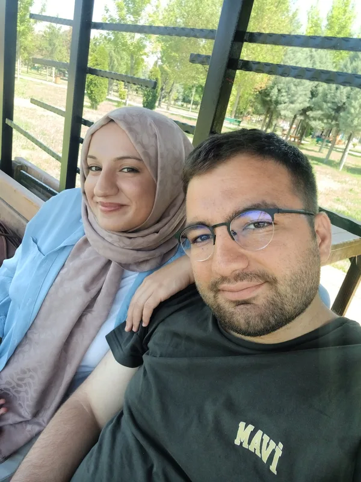
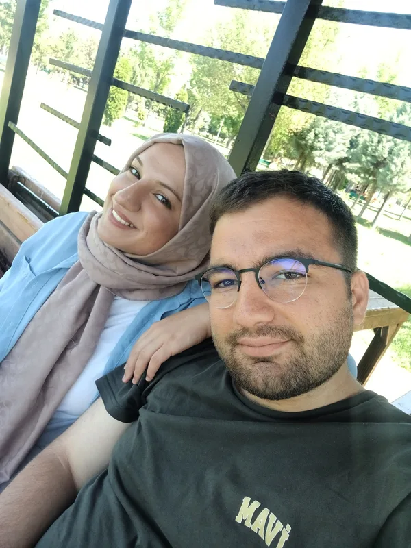
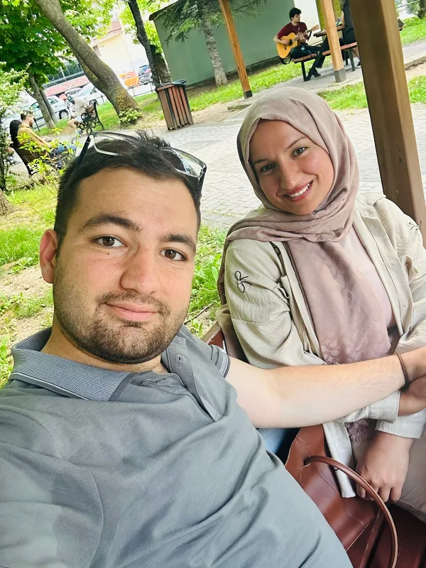
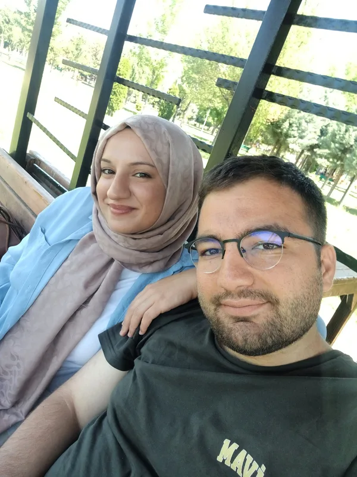
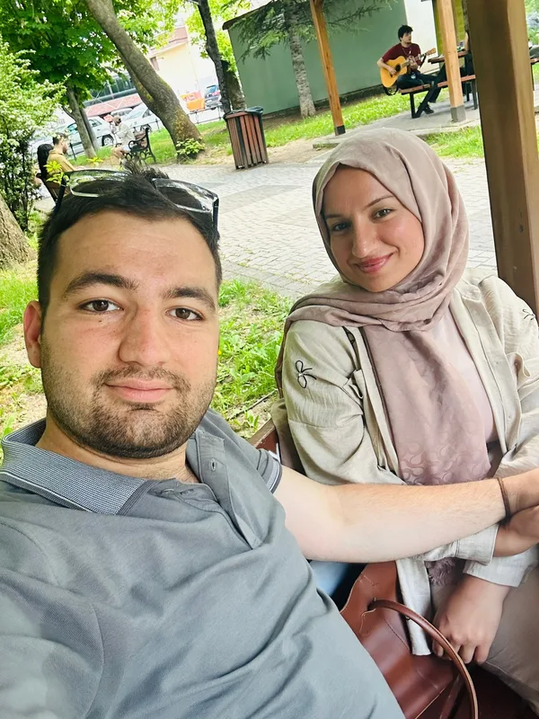

Birlikte Büyüyen Huzur
Artık sadece âşık değiliz; birbirimizin en güvenli limanıyız. Sen yanımdayken içimdeki bütün telaş diniyor, dünya bir adım geri çekiliyor. Bu ay öğrendim ki asıl aşk, kalbin hızlandığı değil; huzur bulduğu yerdeymiş.
Bu özel sayfaya erişmek için şifreyi gir sevgilim... ❤️
2. Ay
SEVGİLİ EBRU'YA · İKİNCİ AY
İki kalp, tek bir ritimle attı;
ikinci ayımızı da sevgiyle tamamladık...
TAMAMLANAN İKİNCİ AY

İkinci ayımızda anladım ki; aşk sadece bir başlangıç heyecanı değil, her geçen gün birbirimizin gözlerinde derinleşen koca bir huzurmuş. İyi ki yanımdasın sevgilim.
Gözlerinin değdiği her yer güzelleşiyor,
varlığın hayatıma en güzel baharı getiriyor.
23 MAYIS - 23 HAZİRAN 2026
Tamamlandı · 60 Gün
Bölüm I
İkinci ayımızdan en özel kareler...





İkinci Ayın Yolu
Altmışıncı güne kadar kalbimizin attığı adımlar...
24 Mayıs
İlk ayı geride bıraktık ve anladık ki bu daha başlangıçmış. İkinci ayımıza, ilk günkü heyecanla adım attık.
4 Haziran
Bir kafede başladı, vitrinlerin önünde aynalara gülümsedik, gökyüzü o gün sırf bize masmaviydi. Sabahtan akşama kadar hiç susmadık, hiç sıkılmadık — bütün gün elimi bırakmadın.
23 Haziran
Altmış günü doldurduk. Bu iki ayda öğrendim ki sevgi eskimiyormuş; her sabah biraz daha yeni, biraz daha derin oluyormuş.
Haziran Sonu
Yollarımızın arasına bir süreliğine kilometreler girdi. Ama o günlerde anladım ki seni özlemek bile güzelmiş; çünkü özlenecek biri olduğunu bilmek, dünyanın en tatlı huzursuzluğuymuş.
Bölüm II
Bu ay kalbimize kazınan özel anlar.
Artık sadece âşık değiliz; birbirimizin en güvenli limanıyız. Sen yanımdayken içimdeki bütün telaş diniyor, dünya bir adım geri çekiliyor. Bu ay öğrendim ki asıl aşk, kalbin hızlandığı değil; huzur bulduğu yerdeymiş.
Her sabah buluşmalarımız, her akşam telefonun diğer ucunda birbirimizi hissetmek... Küçük ama anlamlı ritüellerimizle dolu bir ay.
Okulların kapanmasıyla aramıza kilometreler girdi. Ama her akşam telefonun diğer ucunda sesin olduğu sürece, o kilometreler hiçbir şey ifade etmedi. Meğer seni sevmek için yanımda olman gerekmiyormuş; var olman yetiyormuş.
Bölüm III
İkinci ayın, yazın ve mesafenin dizeleri...
I
Karım benim!
İyi yürekli,
altın renkli,
gözleri baldan tatlı arım benim...
II
Uyandım uyandım, hep seni düşündüm
Yalnız seni, yalnız senin gözlerini
…
Kaç kez sana uzaktan baktım 5.45 vapurunda;
Hangi şarkıyı duysam, bizimçin söylenmiş sanki
III
Sesini duymadığım gün yaşanmış değil,
açan çiçek değil, öten kuş değil;
yüzünü görmediğim gün
içimde yıldızlar sönük, güneşler güneş değil.
IV
Kimseye soramadığım,
Doyunca saramadığım,
Görmesem duramadığım
Nazlı yârim...
V
altmışıncı günde öğrendim
sevginin eskimediğini
her sabah biraz daha yeni
her akşam biraz daha derin
alışılmıyormuş insan sana
VI
aramıza kilometreler girdi diyorlar
girsin
ben senin uyandığın saatte uyanıyorum
aynı gökyüzüne bakıyoruz ikimiz de
uzaklık dedikleri
aynı anda özlemekmiş sadece
VII
yaz geldi
her şey senin şalının rengine döndü
gökyüzü ödünç almış sanki o rengi
ne vakit maviye baksam
içimden adını geçiriyorum
Belki Haziranda mavi benekli çocuksun
Ah seni bilmiyor kimseler bilmiyor
Bir şilep sızıyor ıssız gözlerinden
Belki Yeşilköy’de uçağa biniyorsun
Bütün ıslanmışsın tüylerin ürperiyor
Belki körsün kırılmışsın telâş içindesin
Kötü rüzgâr saçlarını götürüyor
Ne vakit bir yaşamak düşünsem
Bu kurtlar sofrasında belki zor
Ayıpsız fakat ellerimizi kirletmeden
Ne vakit bir yaşamak düşünsem
Sus deyip adınla başlıyorum
İçim sıra kımıldıyor gizli denizlerin
Hayır başka türlü olmayacak
Ben sana mecburum bilemezsin..
Attila İlhan’ın bu şiiri sitenin ilk üç sayfasına ikişer kıta olarak bölündü. Ana sayfa, 1. ay ve 2. ay sırasıyla okunduğunda şiirin tamamı çıkıyor.
Bölüm IV
İkinci ayın şerefine...
Gözümün Nuru Ebru'm,
Bugün tam altmış günü doldurduk. İnsan "iki ay" deyince kısa bir zaman sanıyor ama ben bu iki ayda seninle kaç kere gülmüşüm, gözlerinin içine bakıp kaç kere huzurla susmuşum, gerçekten sayamıyorum. İlk gün kalbimi sarsan o deli heyecan hiç gitmedi; sadece yanına usulca sokulan, içimi ısıtan sıcacık bir güven gelip oturdu. Sen benim bu hayatta sığındığım en güzel liman oldun.
4 Haziran'ı ömrüm boyunca unutmayacağım. Sabah buluştuğumuz o ilk andan, akşam ayrılmak zorunda kaldığımız o son saniyeye kadar zaman nasıl geçti anlamadım. Yanından ayrılırken bile hâlâ konuşacak, birbirimize anlatacak onlarca şeyimiz vardı. O gün çok net fark ettim ki seninle sıradan bir gün diye bir şey yok. En basit, en sade anımız bile başkasının bir ömür arayıp bulamadığı en özel günü kadar güzel.
Sonra okullar kapandı ve araya yollar, şehirler, o zor mesafeler girdi. Doğrusunu istersen sensizlik zordu, hâlâ da zor... Ama bu günler bana çok kıymetli bir şey öğretti: Seni yanımda hissetmem için illa fiziken yanımda olman gerekmiyormuş. Mesafeler henüz bitmedi, biliyorum; yollar hâlâ aramızda uzanıyor. Ama aradaki kilometreler ne kadar artarsa artsın, kalbimdeki yerinin hep aynı yakınlıkta, hatta her geçen gün daha da derinlerde kaldığını görmek bana güç veriyor. Bu uzaklık geçici, ama bendeki sen sonuna kadar gerçek.
İyi ki varsın Ebru'm. Ben artık takvimdeki sayılara ya da geçen aylara bakmıyorum; zamanın da, mesafelerin de anlamsız kaldığı o güzel yerde seviyorum seni. Şimdilik sadece ellerini yeniden tutacağım, gözlerinin içine bakıp zamanı durduracağım o ilk anı düşlüyorum. Sen sadece elimi bırakma yeter.
Sonsuz sevgimle,
Furkan